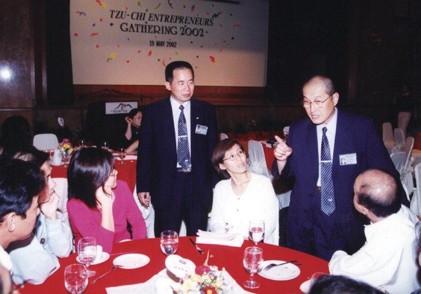
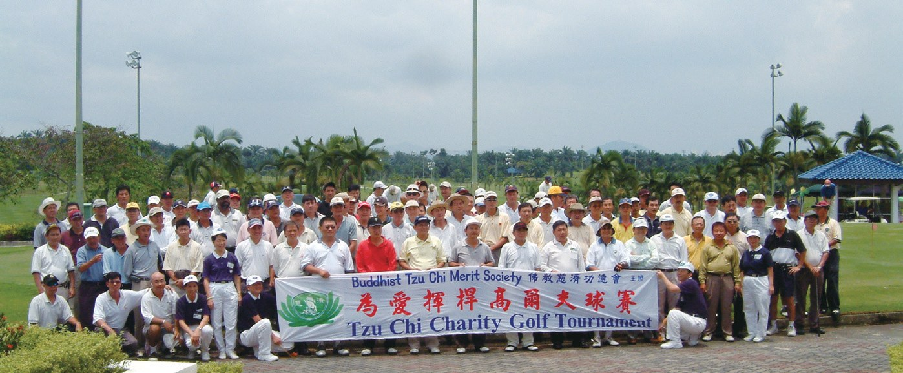
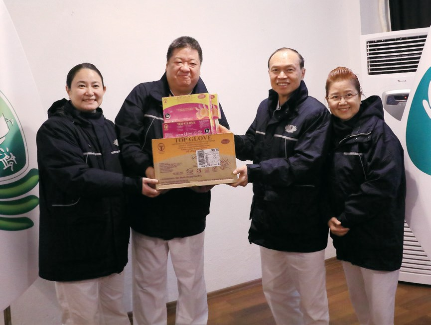

做別人
生命中的貴人
有錢的老闆，最難放下的是什麼？

先別急著下結論，讀完再說說你的想法～
這一篇講實業家聯誼會：一群做大生意的老闆，走進慈濟，學著當「實業家」。
你會讀到為院友洗澡的老闆、找了八年的靜思堂土地，還有兩個小時只募到36令吉的手套大王。
下面是原書的節錄，紅色底線是我們替你標出的轉折點。
讀之前：你覺得有錢人做善事，最難的是什麼？
實業家，不是企業家
1995年，臺灣首次為企業家辦營隊。閱讀引導
教富濟貧、濟貧教富的理念，實質且腳踏實地利益人群、做公益，互相激勵，成為一位富中的貴人
原文・p.5472001年，劉濟雨帶領吉隆坡及馬六甲共13位企業家前往臺灣參加「企業家靜思生活營」。

「肯定大家放下繁忙事業來瞭解慈濟志業，期許要當『實業家』，而非『企業家』。……」
上人和學員分享・p.548
有什麼不一樣？
「……但願你們身上也是裝滿愛的種子，期待你們也能當農夫，開闢每一塊福田，這就是我最大的期待。」
上人在營隊中說・p.5492009年，新馬實業家生活營改為「全球實業家靜思生活營」……
為院友洗澡的老闆
每個月，到殘智障院當志工。閱讀引導
實業家踏進慈濟，通常最難克服的即是放下面子與身段……
院所裡約有兩百多位重度殘智障者，實業家們依據工作分配，不論是環境打理，為院友餵食、剪指甲、更衣及沐浴等，都可以看到他們付出的身影。

老闆們都親手做。
林孝式第一次到殘智障院關懷時，以為在旁邊觀摩就好；當任務分配下來，他得為殘障者沐浴，才知道自己想躲也躲不掉。
在旁邊看看……
尤其當他看到所有參與的人都是親力親為，自己更不敢怠惰，於是硬著頭皮上陣，卻也自此觸發悲心，體會佛法「觀身不淨」的教育。

反而打開了悲心。
蘇淑儀在殘智障院看到院友的不健全，也透過訪視照顧戶見識到什麼叫做家徒四壁，才知道原來世界上真的有這麼窮苦的人，於是開始改變想法。
她認為有錢人除了捐錢，當志工也是本分事，所以更加把握參加慈濟活動的每一個機會。

也要親自來做。
田金香本身有潔癖，對自己的孩子也有諸多要求和不滿。當她看見殘智障院內孩子的狀況，學會惜福，感恩自己擁有健全伶俐的孩子……

更珍惜自己的孩子。
找了八年的土地
好不容易找到地，申請卻被駁回。閱讀引導
1998年起，吉隆坡慈濟積極尋找建造靜思堂所需土地，但歷程艱辛，雖曾購得理想地段，卻因申請無法通過而放棄。
猜一猜閱讀引導
吉隆坡慈濟尋找建靜思堂的土地，前後花了多少年？
……於2007年3月向吉隆坡市政廳提出申請，卻在同年7月，以「土地須作為工業用途」而被駁回申請。
申請卻被駁回！

協調的過程繁瑣艱困，多次考驗眾人們的信心與耐心，終於在2009年11月，團隊順利解決政府提出的條件，因而在2010年3月取得「土地開發准證」，才得以進行動土。
終於可以動土了！
兩小時，36令吉
馬來西亞最大的手套廠，老闆去挨家挨戶募款。閱讀引導
林偉才與妻子董秀美於1991年創立「頂級手套公司」，現今已是馬來西亞最大的橡膠手套製造商。
夫妻倆因忙於工作而長期忽略子女，導致與子女之間產生隔閡……
……但長久下來，看到妻子變得聲色柔和的明顯轉變後，便對慈濟產生了好奇心。
先生好奇了！
- 兩千一百萬雙2014年非洲伊波拉疫情p.553
- 三百萬雙2020年送往中國武漢p.554

2017年，為援助檳城水患災民，他放下身段到社區挨家挨戶募款，但兩個小時卻只募到馬幣36令吉的善款……
只募到36令吉？
……反而因此轉念，認為凡事不能皆以金錢衡量，精神價值的提升才是重點。
「有錢不見得快樂，但用愛付出一定快樂。」
董秀美說・p.554親自下廚供養
在精舍住了三天，回國就開素食餐廳。閱讀引導
在靜思精舍停留三天，有感於靜思家風的勤儉精神，體會到精舍與大地共生息，疼惜眾生萬物的心，因而發願茹素。
……提供商場的一家店鋪，讓慈濟設立二手衣物惜福店，推廣惜福愛物的觀念。
2019年2月，陳志遠不遠千里，偕母親前往靜思精舍，並親自下廚，供養生育他的母親及增長他慧命的證嚴上人。
感恩兩位恩人。
菩薩不是在寺廟裡讓人膜拜的塑像，是走入人群，為人間疾苦而付出的每一位。
上人期許・p.556停一停：誰讓你記住了？閱讀引導
選一位你印象最深的人。沒有標準答案。
有人硬著頭皮為院友沐浴，有人把當志工看成本分，有人兩小時只募到36令吉，有人親自下廚供養。哪一位讓你最有感覺？

一起回頭看看吧～
回望
依本章原文整理，每一條都標了原書頁碼。閱讀引導
背後原因
為什麼要親自去做

小川有錢捐款就好，為什麼還要親自去做？
- 實業家
上人期許要當「實業家」，而非「企業家」。p.548
- 走入人群
參與訪視、環保，承擔各項勤務。p.549
- 見苦知福
看見真正窮苦的人，才開始改變想法。p.550
後續發展
實業家一路走來

小禾從第一屆生活營到馬印交流營，經過了多少年？
- 1995.5.6
臺灣首屆靜思生活營。p.547
- 2001
首批13位企業家返臺參加。p.547
- 2002.5.9
吉隆坡首辦實業家茶會。p.548
- 2006.6
取得靜思堂土地。p.551
- 2010.3
取得「土地開發准證」。p.552
- 2017
首辦馬印實業家交流學習營。p.549
一個帶一個
實業家的善念傳開了
小禾實業家投入後，影響了誰？
- 第一圈先生
董秀美的轉變，讓林偉才走進慈濟。p.553
- 第二圈員工
陳志遠帶動家人與員工共同付出。p.555
- 第三圈靜思堂
實業家積極籌募，成就建設大願。p.552
以上只整理本章寫到的事；書裡沒寫到的，我們不替它下結論。
回頭看讀前的選擇閱讀引導
實業家通常最難克服的是放下面子與身段（p.549）；林孝式硬著頭皮為院友沐浴（p.550）；林偉才挨家挨戶募款（p.554）。比起付出金錢和時間，放下身段往往更難。
林偉才為什麼反而轉念了？
只有你自己看得到喔！
準備好了就一起出發～